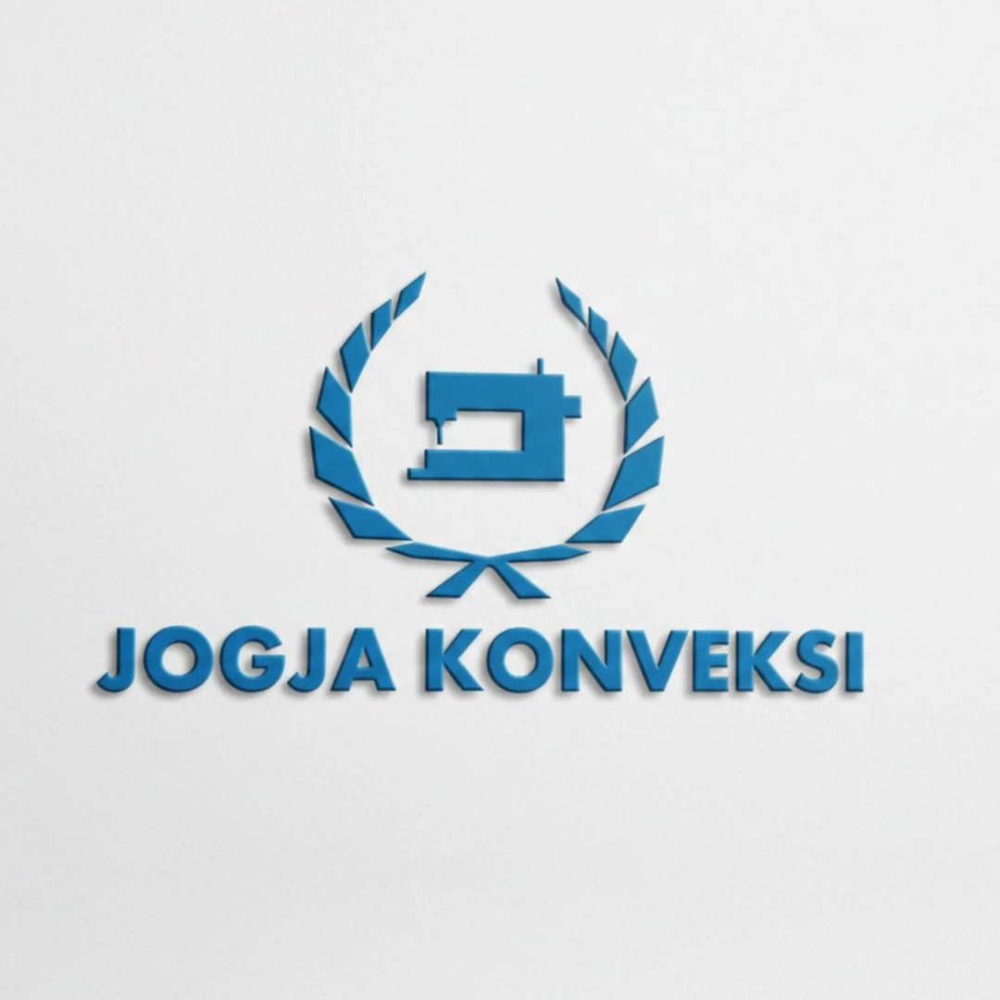

2008
Awal Perjalanan Usaha
Jogja Konveksi memulai kegiatannya pada tahun 2008 dengan memproduksi pakaian untuk kebutuhan clothing sendiri. Pengalaman produksi tersebut menjadi bagian dari perkembangan usaha di bidang konveksi.
Mengenal perjalanan dan bidang usaha Jogja Konveksi

Usaha konveksi yang berkembang di Yogyakarta
Jogja Konveksi merupakan usaha yang bergerak di bidang jasa konveksi dan produksi pakaian yang berlokasi di Yogyakarta. Usaha ini menyediakan layanan pembuatan pakaian berdasarkan kebutuhan dan spesifikasi pesanan pelanggan, baik untuk kebutuhan personal maupun kelompok dan instansi.
Ruang lingkup pekerjaan Jogja Konveksi meliputi proses produksi pakaian, mulai dari persiapan pola, pemotongan bahan, penjahitan, hingga penyelesaian produk. Selain itu, tersedia pula layanan sablon dan bordir untuk melengkapi kebutuhan desain serta identitas pada produk.
Melalui halaman profil ini, pengunjung dapat mengenal bidang usaha dan perjalanan Jogja Konveksi. Informasi mengenai produk dan layanan dapat dilihat lebih lanjut pada halaman terkait.
Perjalanan usaha dari produksi pakaian hingga layanan konveksi
Jogja Konveksi memulai kegiatannya pada tahun 2008 dengan memproduksi pakaian untuk kebutuhan clothing sendiri. Pengalaman produksi tersebut menjadi bagian dari perkembangan usaha di bidang konveksi.
Pada tahun 2012, Jogja Konveksi mulai membuka layanan jasa konveksi untuk umum. Perkembangan peralatan produksi menjadi salah satu faktor yang mendukung penerimaan pesanan dari berbagai pelanggan.
Jogja Konveksi menyediakan beragam pekerjaan konveksi, termasuk produksi pakaian, sablon, dan bordir. Layanan ditujukan untuk memenuhi kebutuhan pelanggan dari berbagai latar belakang dan wilayah.
Catatan: Tahun 2008 merupakan awal produksi pakaian clothing sendiri, sedangkan layanan jasa konveksi untuk umum mulai dibuka pada 2012.
Ruang lingkup pekerjaan Jogja Konveksi
Pengerjaan pola dan jahit untuk menghasilkan pakaian sesuai spesifikasi pesanan.
Pengerjaan sablon untuk kebutuhan desain pada produk pakaian dan produk konveksi lainnya.
Pengerjaan bordir pada pakaian maupun produk lain sesuai kebutuhan pelanggan.
Jelajahi kategori produk dan dokumentasi hasil pekerjaan Jogja Konveksi.